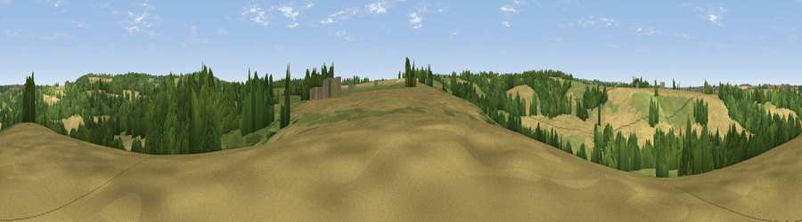

Viewpoint near Kilmersdon
#38358 in England · top 77% of its area beats it · near Kilmersdon · path 173 mWhere it is
The exact computed spot (ST 69425 51825). Click the marker for map links.
Public access: the nearest public right of way is about 173 m away — the final stretch may cross private land. Computed from Natural England's CRoW access layer and OpenStreetMap rights of way — not the legal definitive map. Always verify locally.
The view, rendered

A 360° render of this exact spot computed from the terrain model, tree cover and land cover — summer colours, afternoon light, calibrated against photographs of famous viewpoints. Real trees, hedges and buildings will differ in detail.
The panorama
Grey silhouette: terrain skyline in each direction (720 bearings, Earth curvature and refraction included). Dashed green: skyline with trees (+15 m) and buildings (+8 m) as obstacles. Blue strip: how far the ground is visible on each bearing.
Where the view opens
Wedge length = distance to the farthest visible ground on that bearing (vegetation-aware). Rings at 10, 25 and 50 km.
What fills the view
42% cropland · 32% grassland · 26% woodland
Angular shares of the visible panorama (visual magnitude), not map area. Landscape diversity 0.48 (0–1 Shannon).
Key numbers
More beautiful places nearby
The staircase of upgrades: each row has a higher view potential than everything closer. Driving times are estimates from straight-line distance, calibrated against real road routing — check an actual route before setting out.
| Place | Direction | Drive | Score |
|---|---|---|---|
| Haydon Hill | NNW · 2 km | ~5 min | 30.7 |
| Viewpoint near Hemington | ENE · 2 km | ~5 min | 44.2 |
| Viewpoint near Hemington | E · 4 km | ~9 min | 47.2 |
| Viewpoint near Stratton on the Fosse | WSW · 5 km | ~10 min | 61.0 |
| Viewpoint near Stoke St. Michael | SSW · 7 km | ~14 min | 67.2 |
| Viewpoint near East Cranmore | S · 8 km | ~16 min | 69.2 |
| Viewpoint near Oakhill | SW · 8 km | ~16 min | 71.3 |
| Viewpoint near West Horrington | WSW · 13 km | ~24 min | 73.2 |
51.26475, -2.43960 · source: screening · position refined by local search. Computed location — check access rights before visiting.